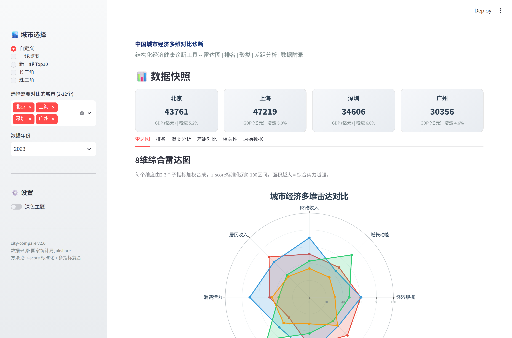

万值翔 · 个人主页
关于我
我是万值翔，华东师范大学经济与管理学院经济学专业 2027 届本科毕业生，共青团员。专业排名前 30%，持基金从业、银行从业资格及初级会计职称，目标进入银行 / 国企 / 政府机关从事经济分析、数据分析与综合管理类工作。
实习横跨政府侧与市场化机构：在上海市经信委参与 20+ 场智能制造项目评审与产业政策研究；在国盛证券独立完成 3 份消费服务行业深度报告并搭建门店经营数据监测系统；在中国联通（上海）统筹新型学徒制培训项目的数据治理。参与正大杯全国市场调研、上证杯 ETF 研究，获省级数学建模竞赛二等奖。
我把经济学训练落地成工具：日常维护 80+ 个开源仓库，覆盖计量经济（pyconometrics）、量化金融（quantlab）、政策模拟（policysim）、宏观经济数据（macrohub）等方向；B 站「黎明之剑11」累计播放 650.7 万，是技术表达与科普的延伸；同时经营一家零食店，对营业额分析、商品定价与周转效率有第一手体感。
实习经历
- 参与 20+ 场智能制造项目评审，梳理企业申报材料的资质、证明链与数据一致性；优化审核清单后项目通过率提升至 95%
- 实地走访 15+ 家新能源及高端装备企业，撰写 3 篇产业调研报告，识别中小企业数字化转型"设备联网率低、数据孤岛、复合人才缺口"三大共性瓶颈
- 独立完成 3 份消费服务行业深度报告，对比多家上市公司财报，识别成本端压力与客单价下行并存趋势，核心观点纳入组内投资参考
- 搭建门店经营数据动态监测系统（Excel Power Query + 数据透视表），追踪百胜中国、九毛九华东区域门店运营效率，识别库存周转、人效分化等风险点，部分建议被采纳
- 统筹企业新型学徒制培训项目数据管理，覆盖 7 个班级、21 个部门 3,500+ 条积点数据，建立数据台账并交叉校验，协调跨部门数据口径统一
- 发现各部门考核评分标准不一致的系统性问题，协助制定统一规范，沉淀数据治理与流程优化方法论
- 参与西部计划宣讲会筹备、政府公文收发登记与台账管理，承担高三教学辅助工作，均获实习鉴定优秀评价
项目与开源

实时预览竞赛与科研
正大杯市场分析与调查大赛 · 优秀奖
构建 LPM / Logistic / 多元线性回归三类计量模型，发现傍晚边际效应最强（系数 0.41），通行时间每增 1 级消费优势比提升 4.34 倍，据此提出"时间成本分摊"机制与分时分层商铺布局建议。
上证杯第六届全国高校 ETF 大赛 · 优秀
独立完成行情研判与资产配置决策，将金融知识转化为实操组合管理结果，体现金融分析与风控意识。
全国高校商业精英挑战赛 · Lacoste 策划
主导 Lacoste 品牌市场战略分析，运用 SPSS 对消费者问卷做描述统计与交叉分析，识别目标客群"注重运动场景社交、价格敏感度中等"，提出「网球奢彩」差异化定位，并参与产品线规划与财务预测。
内容创作与影响力
Bilibili UP主「黎明之剑11」
代表作《你天生就是玩群星的料！》单条播放 50.7 万、《这图片差点没崩住》25.1 万；累计投币 1 万、分享 1 万。通过评论区与弹幕分析用户画像，沉淀"数据反推选题"的内容生产 SOP。
为什么这算"数据分析能力"
- 基于播放量、完播率与互动数据持续复盘爆款共性，形成数据驱动的选题闭环
- 单粉播放比约 1,467，远高于普通创作者，体现内容传播效率与用户黏性
- 全流程负责选题策划、脚本撰写、视频剪辑（剪映 / PR）与数据复盘
- 方法论可迁移至内容运营、用户增长与商业分析岗位
这也解释了为什么我的作品集强调"用数据讲故事"——它来自真实的内容运营体感，而非虚构的演示控件。